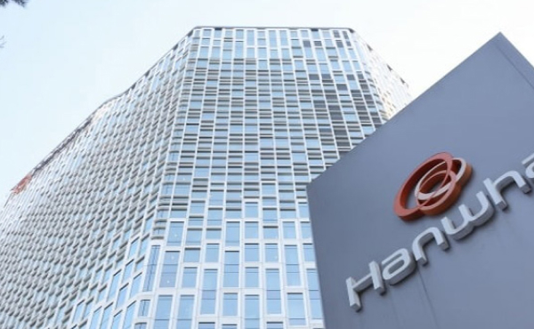

기업연혁
화합과 땀방울로 이룬 미래
1973년 해양한국을 만들기 위한 노력으로 충무공의 정신이 살아 숨쉬는 옥포만에 조선소를 건설하여 경영진과 전 직원이 하나가 되어 세계 최고의 일등 조선해양회사를 건설하였습니다.
1972 ~
1984 ~
1990 ~
1998 ~
2002 ~
2006 ~
2015 ~
1972년 ~ 1978년 해양한국의 발판
- 1973년대한조선공사 옥포조선소 건설 착공
- 1977년소조립공장 준공
- 1978년대우조선 창립기념식
- 1979년 사내 공동 직업 훈련소 개소 및 제1기생 입소식
- 1979년화학제품운반선 첫 호선 수주 건조
- 1981년 옥포조선소 종합 준공식 거행 / 골리아스 크레인 완공
- 1983년제2도크 준공 / 해상해수처리플랜트 인도
1984년 ~ 1989년 도약을 위한 준비
- 1984년옥포로얄도크 도입
- 1984년선박해양기술연구소 설립과 각종 국제인증 취득
- 1984년450톤 갠트리 크레인 준공
- 1985년텍사코 자켓 인도
- 1985년MAST 경영혁신운동과 30만톤 VLCC 건조
- 1986년초대형 선수블록 탑재
- 1987년대우조선 노동조합 설립과 노사분규
- 1988년초대 노조위원장 취임식
- 1988년그룹 자구노력과 조선산업 합리화 조치
- 1989년희망90s 경영혁신운동 출범
1990년 ~ 1997년 희망 90s의 실현
- 1990년희망90s 스타팅 행사 개최
- 1991년 노동조합소비조합 개장 / 희망 90s의 성공으로 첫 흑자 전환
- 1992년 철구공장 준공 / 경영 정상궤도 진입과 ISO 9001 인증 획득
- 1992년한국 최초 전투잠수함 이천함' 건조
- 1993년세계 최초 2중선체 VLCC 2척 동시 진수
- 1993년 국산 1호 전투잠수함 '이천함', 한국기네스북 등재
- 1994년합병회사 설명 조찬회 개최
- 1994년대우중공업에 합병
- 1995년통산 수출 100억달러 달성
- 1996년한국 최초의 토종 구축함 '광개토대왕함' 진수
- 1997년ISO 14001 환경경영 인증 획득
1998년 ~ 2001년 보다 큰 성장을위하여
- 1998년안전기원비 제막식 거행
- 1999년대우그룹 구조조정으로 워크아웃 돌입
- 1999년고난도 고부가가치 LNG 운반선 SK 서미트 건조
- 1999년정밀기술 대통령상과 100대 기술상 수상
- 2000년10월 대우조선 분리독립, 12월 출자 전환
- 2000년 100년사 창조를 위한 “글로벌 탑 2010” 경영혁신운동 시작
- 2000년제1도크 100배치 진수
- 2000년재창업 선포식 거행
- 2000년관광잠수정 용궁호 인도
- 2000년장영실상 수상
- 2001년대한민국 10대 신기술상 수상
- 2001년워크아웃 졸업 / 대우조선해양 사옥 이전
- 2001년LNG선 수주 세계 1위
2002년 ~ 2005년 글로벌 기업의밑그림
- 2002년워크아웃 졸업 기념 열린음악회 개최
- 2002년골리아스 크레인 로고 교체
- 2002년오수종합처리장 준공
- 2003년 기업 핵심가치 '신뢰', '열정' 선정 및 PI 프로젝트 착수
- 2003년 Lloyd's List Maritime Asia誌로부터 세계최우수조선소 선정
- 2003년제2도크 100배치 진수
- 2004년세계조선업계 최초 PI시스템 가동
- 2004년Future Leadership Center 개원
- 2005년세계 최초 LNG-RV 건조 인도
- 2005년경제 5단체로부터 투명경영 대상 수상
- 2005년대한민국 최고기업 수상
- 2005년대한민국 10대 신기술(LNG-RV)선정
2006년 ~ 2014년 지속성장으로의 여정
- 2006년산동유한공사(DSSC) 부지 발파식
- 2006년지배구조 우수기업상 4년 연속 수상
- 2006년수주 100억달러 돌파
- 2006년서울 사무소 신사옥 이전
- 2007년제5회 한국윤리경영대상 투명경영부문 대상 수상
- 2007년한국노사협력대상 대기업부문 대상 수상
- 2007년제44회 무역의 날 60억불 수출의 탑 수상
- 2008년학교법인 세영학원(거제대학) 설립
- 2008년매출 11조원 시대 돌입
- 2009년드윈드사(풍력사업) 설립
- 2009년제46회 무역의 날, 100억불 수출탑 수상
- 2010년 천안함 성공적 인양후 귀환(2010.4.4 ~ 2010.5.3)
- 2011년세계최대 해상원유생산설비 파즈플로FPSO 건조
- 2011년오션플라자 준공
- 2011년국내 최초로 잠수함 해외 수출 시대 개막
- 2011년중공업 사관학교 제막식 거행
- 2012년Novus II 풍력발전단지 준공
- 2012년 세계 조선업계 사상 최초 해양부문 수주 100억불 수주
- 2013년18,000TEU급 세계 최대 컨테이너선 건조 인도
- 2013년인도네시아 조선엔지니어링센터 설립
- 2013년 40만톤급 초대형 철광석 운반선(VLOC) 세계일류상품 선정
- 2013년세계 최대 263K 규모 LNG-FSRU 수주
- /2014년세기 거북선 중형잠수함 장보고-III 생산 착공
- 2014년북극해용 쇄빙 LNG선 15척 수주
- 2014년국내 조선소 중 최다 37척 LNGC 수주
2015년 ~ 2022년 재도약을 위한 도전
- 2015년19,224TEU급 세계 최대 컨테이너선 건조 인도
- 2015년 DSME 기술 적용, 세계 최초 LNG 추진 컨테이너선 인도 완료
- 2015년 세계 최초 LNG추진 엔진, 재액화장치(PRS®) 탑재 LNGC 건조
- 2015년영국 BSI로부터 국내 최초 ISO 55001 인증 획득
- 2016년 국내 첫 수출 잠수함-인도네시아 잠수함 1호함 진수
- 2016년세계 최초 말레이시아 P-FLNG 인도
- 2016년창사 이래 100번째 LNG운반선 인도
- 2016년서울 본사 사옥 매각
- 2016년세계 최초 쇄빙LNG선 완공
- 2017년세계 최대 규모 잭업리그(Jack-up Rig) 인도
- 2017년 극저온형 고망간강 LNG 저장탱크 `맥티브(MCTIB)` 개발
- 2017년 독자개발 국내 최초 인도네시아 수출잠수함 `나가파사함` 인도
- 2017년 멤브레인형 LNG화물창 `솔리더스(SOLIDUS)` 독자 개발 성공
- 2017년 LNG-FSRU, 야말쇄빙LNG선 '17년 최우수선박 선정(마리타임)
- 2018년 세계 최초 고압엔진용 완전재액화시스템 LNGC 건조 성공
- 2018년 세계 최초 저압엔진용 완전재액화시스템 LNGC 건조 성공
- 2018년국내최초 중형급 잠수함 `도산안창호함` 진수
- 2018년시흥연구개발센터 개소
- 2019년슬로싱 연구센터 개소
- 2019년러시아 야말 쇄빙LNG선 15척 최종 인도
- 2019년지능형 생산기술 실험센터 개소
- 2020년 세계 최대 컨테이너선 '알헤시라스'호(2만4,000TEU급) 명명
- 2020년Arc7 쇄빙LNG 6척 수주(러시아 노바텍)
- 2020년안무함 진수(3,000톤급 잠수함)
- 2020년세계 최초 조선소 안벽에서 LNG 선적작업 성공
- 2021년서울 사무소 이전(그랜드센트럴 빌딩)
- 2021년디지털 생산센터 개소
- 2021년ESG 추진단 신설
- 2021년DAN-V(단비:자율운항 시험선) 명명
- 2022년ESG위원회 신설
- 2022년 '2022 대한민국 기술대상' 도산 안창호함 대통령상 수상